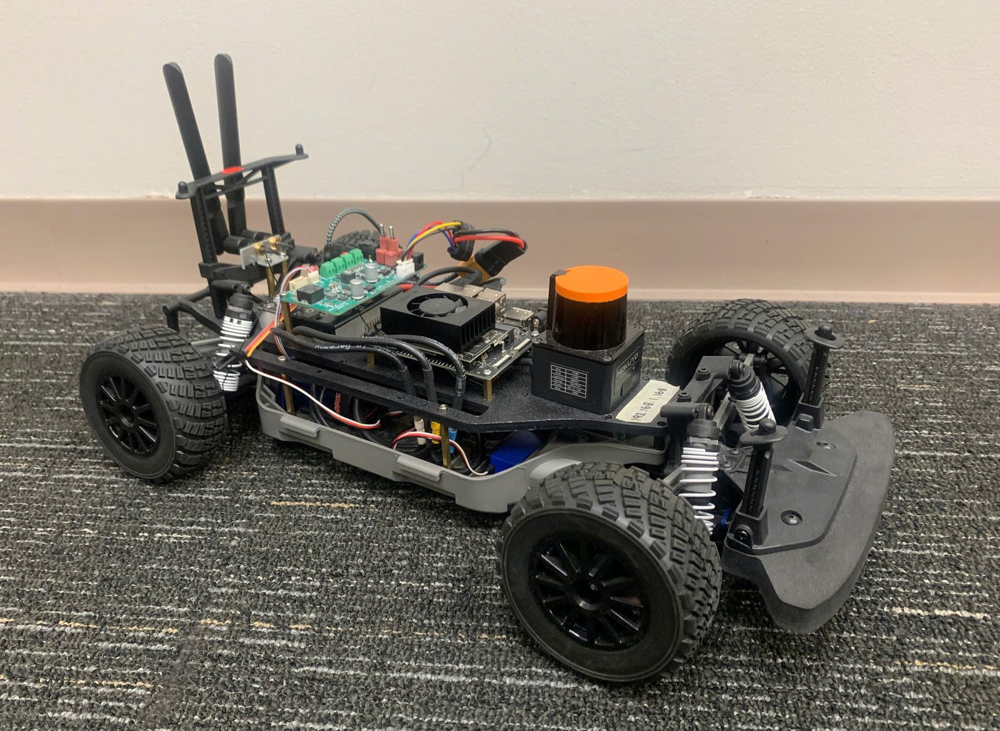

IROS 2026
Autonomous racing
15% faster laps than standard MPC in a full-size race-car simulator
AD-MPCC: a racing controller that re-learns the road as it drives
It estimates tire–road grip online and retunes its own cost weights through a differentiable MPC, so it holds pace when the surface changes.